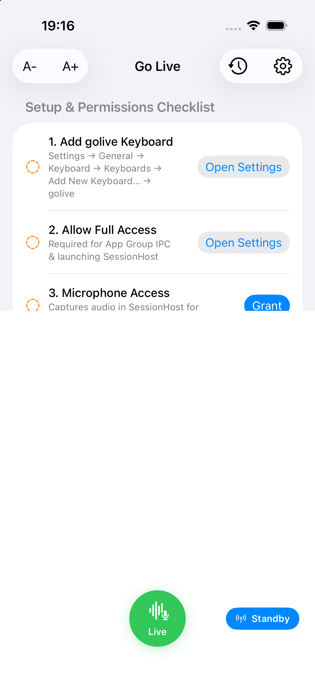

At the cursor
Transcribe in the language you speak, or translate, and place the text where you are typing.
iOS 17+ · macOS 14+
Speak, then keep the original language or translate into Traditional Chinese. golive uses the Gemini API key you provide. It does not create an account.
Questions and privacy requests go to the public issue tracker. Do not include an API key or a private transcript.

Transcribe in the language you speak, or translate, and place the text where you are typing.
The key stays in the device Keychain. Audio for a session you start goes to Google Gemini Live, not to a golive server.
The App keeps the words, not the audio, in a local history of at most 500 records.